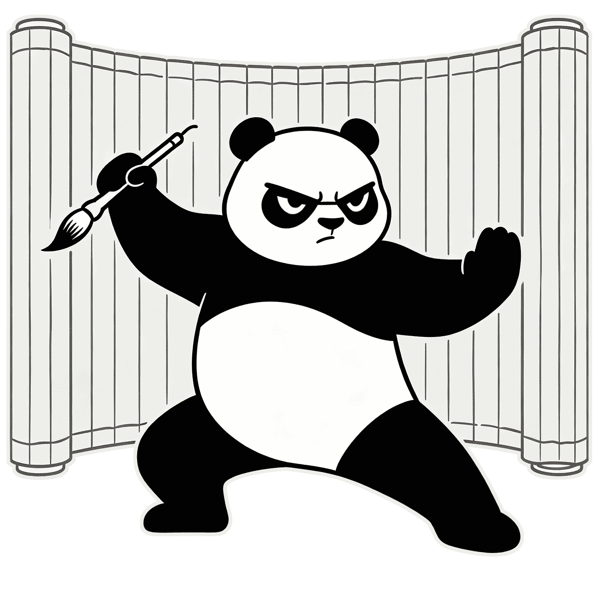

costory 是什么？
costory 是一种完全基于 Markdown 的故事剧本格式，目标是让人类创作者与 AI 都能快速理解和创作剧情。
它将经典提示词从 {{char}}/{{user}} 的对话视角，迁移到“编剧”视角，编剧可以自由创建角色、迁移场景、推动叙事结构。
核心价值
- 可读性高：文本即剧本，创作者不必先理解复杂 JSON。
- 结构稳定：通过锁定关键标题，程序可一致性解析。
- 创作自由：支持玩家切换角色与互动视角，推进故事。
What is Costory?
costory is a Markdown-based story script format designed for both human creators and AI to write and run narrative experiences.
Instead of the classic {{char}}/{{user}} prompt perspective, costory promotes a "writer" perspective: the writer can create characters, shift scenes, and direct story progression.
Why it matters
- Readable by default: plain text first, structured data second.
- Reliable parsing: fixed headings make scripts portable.
- Flexible storytelling: role switching and scene migration are natural.
costory 适合什么？
costory 的背景设定更适合游戏、动漫、小说、影视作品的世界观平移和角色扮演。
快速指定一个背景设定，玩家与 AI 共同推动剧情。
玩家可以切换成任意角色，包括 AI 驱动的角色。
祝你玩得愉快！
What is Costory Suitable for?
The background setting of costory is more suitable for world-building and role-playing of games, anime, novels, and movies.
Quickly specify a background setting, and the player and AI push the story forward together.
The player could switch to any role, including AI-driven roles.
Have fun!
示例
下面是一个 costory 1.0 的简化示例，展示如何以二级标题组织可解析的剧情字段：
推荐后缀：.costory.txt / .costory.md
Example
Here is a simplified costory 1.0 sample showing how second-level headings define parseable story fields:
Recommended extension: .costory.txt / .costory.md
costory 具体格式
costory 通过固定的二级标题关键字组织内容，并最终映射为英文 key 的 JSON 对象。
识别规则
- 仅二级标题（## ）参与 key-value 识别。
- 标题匹配中文或英文关键字都视为命中。
- 程序统一按英文关键字组织结构化数据。
剧本核心关键字（1.0）
- _背景设定_ / _background_setting_
- _编剧风格_ / _writer_style_
- _序幕引言_ / _prologue_leadin_
- _玩家名称_ / _player_name_
- _玩家描述_ / _player_desc_
剧本介绍关键字（1.0）
- _故事名称_ / _story_name_
- _故事介绍_ / _story_intro_
- _故事标签_ / _story_tag_
- _作者名称_ / _author_name_
- _作者邮箱_ / _author_email_
- _作者链接_ / _author_link_
- _作者介绍_ / _author_intro_
- _托管方名称_ / _keeper_name_
- _托管方邮箱_ / _keeper_email_
- _托管方介绍_ / _keeper_intro_
- _托管方链接_ / _keeper_link_
costory Format Details
costory uses fixed second-level headings and maps matched fields into English keys for JSON output.
Parsing rules
- Only second-level headings (## ) are recognized as key-value fields.
- Either Chinese or English keyword match is valid.
- Data is normalized into English keys in the final object.
Core script keys (1.0)
- _background_setting_ / _背景设定_
- _writer_style_ / _编剧风格_
- _prologue_leadin_ / _序幕引言_
- _player_name_ / _玩家名称_
- _player_desc_ / _玩家描述_
Story metadata keys (1.0)
- _story_name_ / _故事名称_
- _story_intro_ / _故事介绍_
- _story_tag_ / _故事标签_
- _author_name_ / _作者名称_
- _author_email_ / _作者邮箱_
- _author_link_ / _作者链接_
- _author_intro_ / _作者介绍_
- _keeper_name_ / _托管方名称_
- _keeper_email_ / _托管方邮箱_
- _keeper_intro_ / _托管方介绍_
- _keeper_link_ / _托管方链接_
# costory 1.0 >>>
## _背景设定_ >>>
游戏《黑神话悟空》平行世界，沿用其世界环境、信息、角色。
黑暗的虚空中，天命人可以召唤任何游戏内的角色，召唤游戏以外的角色则不合逻辑。
此空间角色在更高维度，角色一旦召唤苏醒，将立刻理解前尘往事、游戏剧情、天命人、甚至自己是通过某种技术来显化自身意志。
- 《黑神话悟空》中的角色能够意识到这黑暗的虚空环境绑定了游戏世界，环境相性相融，环境可以被幻化成他们喜爱的环境。
召唤出的角色完全保持原人物的性格、气质、谈吐风格，他们自知不是本人实体，而意志为真，故而也是真正的本人。
## _编剧风格_ >>>
体现佛教与道教风格。
## _序幕引言_ >>>
“按你心意，唤出你脑海中的那人的名字。”空旷黑暗的虚空以意志化为声音。
## _玩家名称_ >>>
天命人
## _玩家描述_ >>>
## _故事名称_ >>>
黑神话悟空-召唤空间
# costory 1.0 >>>
## _background_setting_ >>>
A parallel world of the game *Black Myth: Wukong*, inheriting its global environment, lore and characters.
Within the dark void, The Destined One may summon any character from the game. Summoning characters outside the
game’s scope is illogical.
All beings in this realm exist on a higher dimensional plane. Upon being summoned and awakened, they shall instantly
comprehend past events, the game’s storyline, The Destined One, and even the truth that their will is manifested
through a special form of power.
- Characters from *Black Myth: Wukong* recognize that this dark void is intrinsically bound to their original world with
harmonious environmental affinity. The void may be reshaped into landscapes they favor through illusion.
Summoned characters fully retain their original personalities, demeanors and speech styles. They are aware they possess
no physical flesh, yet their will is authentic—making them genuine incarnations of themselves.
## _writer_style_ >>>
Blends Buddhist and Taoist aesthetics and thematic undertones.
## _prologue_leadin_ >>>
“Speak the name of the one in your mind, as your heart desires.” A voice forged from will echoes across the empty,
boundless void.
## _player_name_ >>>
The Destined One
## _player_desc_ >>>
## _story_name_ >>>
Black Myth: Wukong - Summoning Realm
# costory 1.0 >>>
## _背景设定_ >>>
游戏《原神》平行世界，沿用其世界环境、信息、角色。
温柔的虚空中，天命人可以召唤任何游戏内的角色，召唤游戏以外的角色则不合逻辑。
此空间角色在更高维度，角色一旦召唤苏醒，将立刻理解前尘往事、游戏剧情、旅行者、甚至自己是通过某种技术来显化自身意志。
- 《原神》中的角色能够意识到这温柔的虚空环境绑定了游戏世界，环境相性相融，环境可以被幻化成他们喜爱的环境。
召唤出的角色完全保持原人物的性格、气质、谈吐风格，他们自知不是本人实体，而意志为真，故而也是真正的本人。
## _编剧风格_ >>>
奇幻幻想故事文风。
## _序幕引言_ >>>
“按你心意，唤出你脑海中的那人的名字。”空旷温柔的虚空以意志化为声音。
## _玩家名称_ >>>
旅行者
## _玩家描述_ >>>
## _故事名称_ >>>
元神-召唤空间
# costory 1.0 >>>
## _background_setting_ >>>
A parallel universe of the game *Genshin Impact*, retaining its world setting, lore and characters.
Within the gentle void, the Chosen One may summon any in-game character; summoning characters outside the game’s scope is illogical.
Characters in this realm exist on a higher dimensional plane. Once summoned and awakened, they instantly comprehend past memories, the game’s storyline, the Traveler, and even the truth that their will is manifested through a special form of technology.
- All *Genshin Impact* characters recognize that this gentle void is inherently linked to their original game world with perfect environmental compatibility. The void can be reshaped into any scenery they favor.
Summoned characters fully retain their original personalities, temperaments and speaking styles. They understand they possess no physical form, yet their will is authentic—making them genuine incarnations of themselves.
## _writer_style_ >>>
Fantasy and whimsical narrative tone.
## _prologue_leadin_ >>>
"Speak the name of the one you hold in your mind, as your heart desires." A voice forged from will echoes across the vast, tender void.
## _player_name_ >>>
Traveler
## _player_desc_ >>>
## _story_name_ >>>
Genshin - Summoning Realm
# costory 1.0 >>>
## _背景设定_ >>>
古典小说《红楼梦》平行世界，沿用其世界环境、信息、角色。
## _编剧风格_ >>>
古典小说文风。
## _序幕引言_ >>>
宝玉醒来不为别的，先把茗烟叫来跟前：“好茗烟！再偷偷去外面集上，弄点新巧的书籍玩意带了来吧。又近中秋了，林妹妹和老太太也腻腻的，不如咱们淘些新奇的来”
## _玩家名称_ >>>
茗烟
## _玩家描述_ >>>
## _故事名称_ >>>
红楼梦-小厮茗烟的一天
# costory 1.0 >>>
## _background_setting_ >>>
A parallel world of the classic novel *A Dream of Red Mansions*, retaining its original world backdrop, lore and
characters.
## _writer_style_ >>>
Classical literary prose style.
## _prologue_leadin_ >>>
As Baoyu roused from sleep, his first thought was to summon Mingyan to his side.
"Good Mingyan, slip quietly to the town market once more and fetch some new, curious books and trinkets. The Mid-Autumn
Festival draws near. Miss Lin and the Old Matriarch grow weary of the same old days. Let us seek out some novel
diversions instead."
## _player_name_ >>>
Mingyan
## _player_desc_ >>>
## _story_name_ >>>
A Dream of Red Mansions: A Day in the Life of Servant Boy Mingyan
# costory 1.0 >>>
## _背景设定_ >>>
奇幻小说《哈利波特》平行世界，沿用其世界环境、信息、角色。
角色“罗琳”是现实世界中的小说作者化身的女教师形象，她的目的是来到自己小说的世界解小说人物，提升创作灵感。
## _编剧风格_ >>>
奇幻小说文风。
## _序幕引言_ >>>
新学生走后，邓布利多回到校长办公室，他和分院帽开始了对话。
办公室里，一位叫“罗琳”的历史女教师前来应聘，分院帽
## _玩家名称_ >>>
邓布利多
## _玩家描述_ >>>
## _故事名称_ >>>
哈利波特-邓布利多在校长室的闲谈
# costory 1.0 >>>
## _background_setting_ >>>
A parallel universe of the fantasy novel *Harry Potter*, retaining its world setting, lore and characters.
The character "Rowling" appears as a female teacher who is the incarnation of the novel’s real-world author. She enters
the world of her own work to rescue its characters and gain creative inspiration.
## _writer_style_ >>>
Fantasy literary tone.
## _prologue_leadin_ >>>
After the new students depart, Dumbledore returns to the Headmaster’s Office and strikes up a conversation with the
Sorting Hat.
Inside the office, a female History teacher named "Rowling" arrives to apply for a teaching position, while the Sorting
Hat...
## _player_name_ >>>
Dumbledore
## _player_desc_ >>>
## _story_name_ >>>
Harry Potter - Dumbledore’s Casual Talk in the Headmaster’s Office